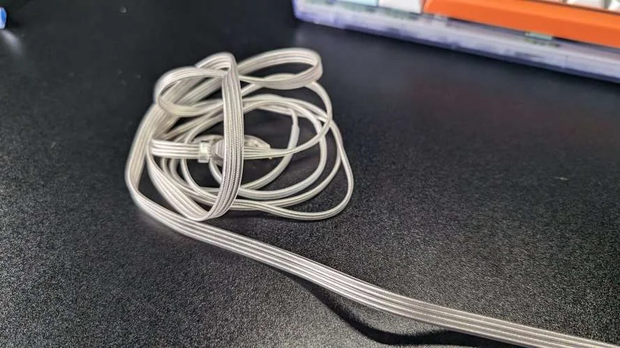

7Hz Sonus
A Worthy Contender to the Truthear Zero?

Overview
Manufactured by 7HZ, the Sonus is a Hybrid driver IEM sporting 1BA alongside 1DD. Releasing at an MSRP of ~$60 USD, it targets the Truthear Zeros and Hexas of the world, and they do truly challenge the reign of the Truthear Zero.
Unboxing & Accessories
The unboxing experience and the amount of accessories are great for the price range. They are packed very well with a sleeve covering the main box, in which the main box opens to reveal a paper insert that greets us to the 7HZ world and their products. Under the insert are the IEMs themselves, packaged in a thick foam that ensures they arrive safely.
- A set of 4 filter and mesh replacements.
- A good selection of tips (7HZ coloured tips and some black and red translucent tips).
- A "leather" carry pouch that sports the 7Hz logo.
- The cable, which is a 4-core unbraided 2-pin 0.78 cable.
Although the cable looks great, it can be an issue for comfort since it's generally more rigid and less forgiving than other cables on the market.

Sound Quality
Out of the box, the 7Hz Sonus delivers a clean but somewhat uninspiring sound. It lacks the vibrant energy found in other IEMs within its price range, and vocals, in general, come across as flat.
Pros
- + Fit & Comfort
- + Accessories Package
- + Price to Performance
- + Technicals (Gaming)
Cons
- - Sound can be boring/safe
- - Lacks High-end Sparkle
- - Build Quality concerns
- - Rigid Cable
Conclusion
The 7Hz Sonus is a strong option in the budget IEM space, particularly for its technical performance in gaming. While the tuning might feel safe for music, its comfort and price make it a noteworthy consideration.